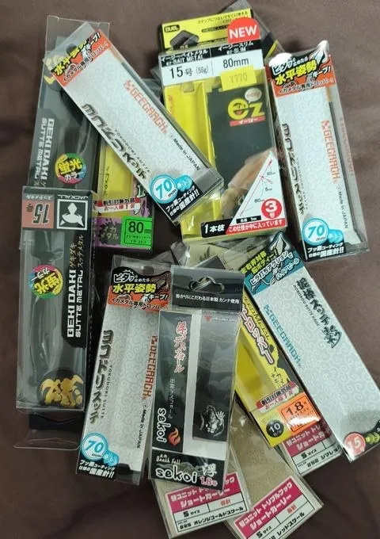
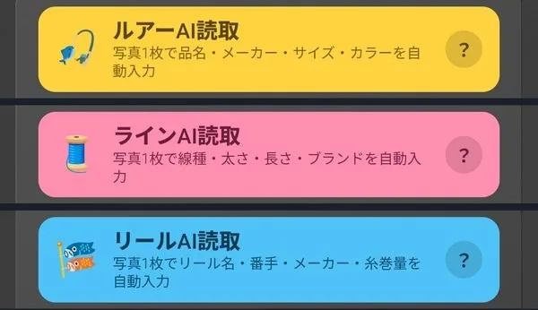
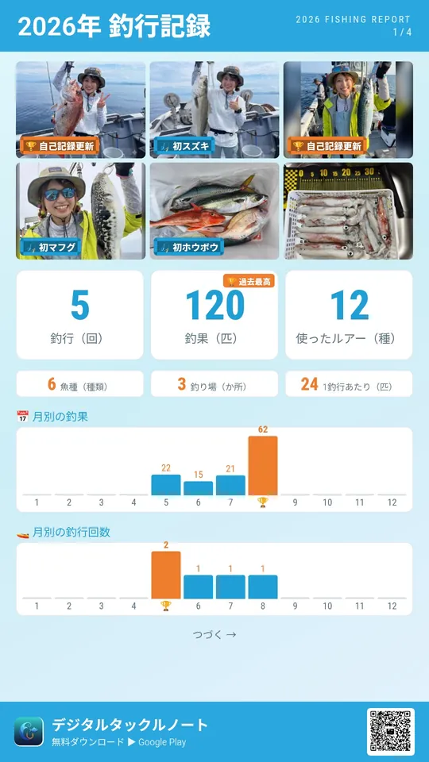

釣り人の困りごと解決に特化した、ルアー・ライン・リール・釣果の管理アプリです。
Android 7.0 以上｜基本機能は無料（PRO版あり）
📱 スマホ（Android）でこのページを開くと、そのままインストールできます
いまはAndroid専用です。iPhone版を希望される方は、お知らせください（開発の参考にします）。
ありがとうございます！
ご意見・ご要望を書く（任意）持っているルアーを写真つきで一覧管理。釣れたルアーは、ヒット数が自動で貯まります。

パッケージを撮るだけで、品名・メーカー・サイズ・カラーをAIが自動入力。結果は確認・修正してから登録できます。
写真を残しておけば、かさばるパッケージは迷わず手放せます。
釣果に使ったルアーを選ぶだけで、ヒット数を自動集計。一軍ルアーがひと目でわかり、🤝相棒・⚔️エース・👑伝説の称号もつきます。
ロストしたルアーは記録に残り、そのまま買い物リストに追加できます。買い忘れを防げます。

ルアー・ライン・リールに、それぞれ「AI読取」ボタン
管理するものがバラバラだと、「あれ、どうだっけ？」が増えていきます。釣りの道具と釣果に特化して、ひとつにまとめました。
どのリール（スプール）に、どのラインを巻いたっけ？
ライン×リールを紐付けて管理。スプール単位の管理にも対応し、保有一覧でひと目で確認できます。
このライン、何回使った？ リールのメンテ、いつした？
ラインの使用回数・購入日、リールのオーバーホール・カスタム履歴を記録。交換やメンテの目安にできます。
このリール、ラインは何m巻ける？
登録したスペックから、推定糸巻き量を自動計算します。
ライン交換の手順、毎回迷う…
ナビ機能が、ラインの取り外し・移動・装着をガイド。画面に従うだけで完了します。
釣りの最中は、アプリに登録している時間なんてありません。写真を撮っておけば、帰ってから撮影時刻ごとに釣果をまとめて登録できます。
写真を選ぶ
その日の写真をまとめて選択
（1つの釣行で最大15枚）
撮影時刻ごとに釣果が並ぶ
1分以内の写真は同じ1匹に自動でまとめ
できあがり
ルアーのヒット数も自動で貯まる
← 横にスワイプ →
写真1枚から、魚種・ルアー・時刻を自動で入力（結果は確認できます）
写真がないとき、自分で入れたいときに
写真がたくさんある日（数釣りの日など）に
釣行回数・釣果数・月別グラフ・記録更新
自己最高サイズ・魚種別・釣り方別・釣り場別・潮まわり別

釣果写真と数字を、1枚のカード画像に
← 横にスワイプ →
基本機能は無料です。バックアップ・復元などのPRO版もご用意しています。AI読取は、2026年10月現在、無料版でも回数制限なしでご利用いただけます。
ルアー・ライン・リール・釣果を、これ1本で。
Android 7.0 以上｜基本機能は無料（PRO版あり）
いまはAndroid専用です。iPhone版を希望される方は、お知らせください（開発の参考にします）。
ありがとうございます！
ご意見・ご要望を書く（任意）デジタルタックルノートは、いまはAndroid専用です。iPhone版の開発を検討するため、ご希望をうかがっています。
ありがとうございます！
ご意見・ご要望を書く（任意）